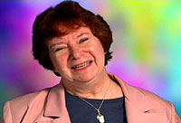

|

| D.C.
Fontana: "Franquia precisa ser repensada"  |

| Trek Brasilis - A série original de Jornada nas Estrelas está agora sendo lançada em DVD no Brasil. Quando você pensa na série, você a vê como um produto dos anos 1960 ou como um conjunto atemporal de histórias relevantes que ainda têm um ar contemporâneo? D.C. Fontana - Olhando para trás ao longo dos anos, eu sempre senti que Jornada nas Estrelas (a série original) lidava com temas e questões universais que eram e continuam a ser relevantes. A série levantou questões de preconceito racial, guerra como "a resposta" e também sobre como a guerra é conduzida e com que propósito, questões de gênero, questões que falavam sobre como alguém encara algo considerado "alienígena", e outras perguntas muito profundas. Talvez a mais importante fosse, o que é ser humano? E é o "humano" a melhor coisa para ser num mundo que necessariamente precisar abraçar alienígenas? (Essa é uma questão que pode ser interpretada no contexto de religiões, crenças comportamentais e morais tidas como "alienígenas".) Para mim, Jornada nas Estrelas sempre olhou para a humanidade de seus personagens e PROCUROU a humanidade nas culturas e sociedades que os personagens encontravam. O máximo denominador comum que os diferentes pontos de vista e culturas podiam encontrar é o do coração humano. TB - Os escritores da série original estavam preocupados com outros competidores do gênero, como "Perdidos no Espaço", ou vocês estavam concentrados demais em suas próprias histórias para olhar em volta para o que estava acontecendo? Qual era a percepção geral que vocês tinham das outras séries sci-fi? Fontana - Nós honestamente não nos preocupamos com "Perdidos no Espaço" ou "Viagem ao Fundo do Mar" porque eles simplesmente não faziam o mesmo tipo de histórias em que estávamos interessados. Nós sentíamos que tínhamos uma audiência diferente, que estávamos atraindo um nível e um tipo diferente de audiência. TB - Se bem me lembro, você foi trazida por Gene Roddenberry depois de reescrever o episódio "Charlie X". Invertendo posições, você alguma vez se irritou com alterações em seus próprios roteiros ou histórias? Como Gene Roddenberry lidava com essas questões, especialmente com autores famosos, como Harlan Ellison? Fontana - Meu primeiro roteiro em Jornada nas Estrelas (mas não em minha carreira -- eu tive nove créditos anteriores a Jornada) foi "Charlie X". Gene Roddenberry perguntou se eu estava interessada em escrever alguma história, e eu escolhi "Charlie X", uma história que aparecia em um parágrafo na bíblia da série. Gene aprovou e eu desenvolvi a história e então escrevi o roteiro. Não foi uma rescrita, pois não havia nenhum outro roteiro, exceto o meu. Eu nunca fiquei irritada por alterações, principalmente porque eu estava na equipe e ninguém mais alterava meu texto exceto por necessidades de produção, por exemplo, um cenário que não poderia ser construído por causa do orçamento ou se precisássemos cortar o número de figurantes etc. Nos primeiros 13 episódios, Gene freqüentemente rescrevia roteiros para conformá-los à série que ele imaginou. Mais tarde, Gene Coon e os editores de histórias (inclusive eu) reescrevemos coisas quando necessário -- de novo, para editar por questões de tempo, para melhorar ou conformar os personagens às necessidades das séries, para produção. Isso é rotina em toda série de televisão, e o processo foi usado para fazer a melhor série de televisão possível. TB - Em que ponto da série você teve a sensação de que estava fazendo parte de algo realmente especial? Fontana - Nós sentíamos que Jornada nas Estrelas era especial desde o comecinho. É difícil explicar quanto entusiasmo todo mundo tinha pela série -- os auxiliares, os atores, os escritores e diretores de fora, a equipe. Todo mundo estava engajado nas histórias e na produção desta série. Este foi o único programa em que trabalhei em que até mesmo os "grips" (que movem os pedaços dos cenários) e os pintores estavam interessados no que acontecia em cada minuto da produção. Eu me lembro de uma reunião com um executivo da rede em que ele exclamou, exasperado, "Vocês parecem acreditar que a nave está mesmo lá em cima". Ao que o produtor associado Bob Justman (falando por todos nós) respondeu, "Está sim!". TB - Pergunta boba, mas inevitável: quais foram os seus melhores e piores momentos durante a produção da série original? Fontana - Os melhores momentos sempre foram quando os roteiros funcionaram bem e o que foi filmado era exatamente o que se esperava que fosse. O pior -- o dia em que a série foi cancelada. TB - Muitas pessoas atribuem os aspectos de humor de Jornada nas Estrelas a Gene Coon. Como era sua relação com ele? É verdade que diferenças entre os dois Genes fizeram Coon sair da série? Fontana - Sempre houve momentos de humor em Jornada nas Estrelas, mes tenho de admitir que Gene Coon contribuiu para a maioria deles. Ele era um cavalheiro maravilhoso e um ótimo escritor. Embora (até onde eu saiba) ele nunca tivesse feito ficção científica antes, ele pegou rapidamente e pôs sua própria "marca" em cada roteiro que escreveu. Gene Coon era um excelente colaborador e estava sempre aberto a sugestões e contribuições de outros. Eu penso nele como um "Buda sorridente", porque ele era um homem rouco com uma face redonda -- e um grande sorriso para acompanhar. Gene Coon deixou a série por causa de alguns problemas físicos que estava tendo na época. Ele escreveu alguns episódios da terceira temporada, mas, até onde sei, ele não se sentiu capaz de manter os requisitos físicos diários de produzir uma série de televisão. TB - Nas suas mãos, "This Side of Paradise" perdeu seu foco em Sulu e se concentrou em Spock. Neste caso, golpe de gênio, sem dúvida. No entanto, você não acha que às vezes os escritores evitaram demais desenvolvera os personagens de apoio, como Sulu, Uhura, Scott e Chekov? Como você se sente ao escrever para esses personagens? Fontana - Jornada nas Estrelas tinha três estrelas principais (Kirk, Spock, McCoy), e esses personagens carregavam o grosso das nossas histórias. No entanto, com o tempo que tínhamos para contar as histórias (54 minutos de tempo no ar, na época), podíamos também desenvolver sub-enredos que envolviam o segundo conjunto de atores (Sulu, Uhura, Scott, Chekov, enfermeira Chapel). Tentamos fazer isso o máximo possível, não apenas para manter esses personagens vivos mas também para aumentar a riqueza das histórias. Ocasionalmente, por causa da história sendo contada, nós não podíamos envolver esses personagens tanto quanto gostaríamos, mas todos os escritores tentaram envolver esse personagens coadjuvantes tanto quanto possível. Pessoalmente, eu sempre gostei de escrever para esses personagens, especialmente as mulheres. TB - A série original de Jornada nas Estrelas ainda é vista como uma grande série, mas a franquia como um todo não está nesta forma. Sendo uma das pessoas que trabalhou no primeiro spinoff, A Nova Geração, o que você acha que se perdeu durante os últimos 18 anos, para que vejamos hoje o fim de Jornada, com o cancelamento de Enterprise? Fontana - Humanidade. Eu não vi todos os episódios de todos os spinoffs (incluindo A Nova Geração), mas os que vi faltavam o calor e a profundidade humana que tentamos alcançar na série original. TB - É isso mesmo? Jornada nas Estrelas está mesmo morta? Fontana - Bem, eu não sei. Há provavelmente possibilidades que ainda restam. No entanto, eu acho que a franquia precisa de um descanso e de uma repensada. Por outras pessoas. TB - Você agora está escrevendo um episódio para a série de fãs, New Voyages. Por que decidiu ir a bordo? Alguma pista do que podemos esperar desse episódio? Fontana - Eu decidi fazer um episódio para New Voyages porque eu gostei do conceito de pegar do fim da terceira temporada da série original e fazer histórias que não tivemos a chance de fazer na época. Também, porque era uma chance de escrever para Walter Koenig novamente, já que ele será o astro convidado deste episódio. Pistas? Eu realmente não acredito nelas -- eu gostaria que as pessoas fizessem o download do episódio quando estiver disponível e curtam a história. OK -- prepare-se para algumas grandes viradas e mantenha seu Kleenex à mão. TB - Após tantos anos, os fãs finalmente ficaram sabendo do ambiente que rondava o elenco da série original. Os atores coadjuvantes mostraram algum ressentimento para com William Shatner, dizendo que ele tentava minimizar a importância deles. E quanto aos escritores? Há histórias secretas sobre os escritores? Algum conflito para revelar? Fontana - Não. Apesar das histórias de que Bill "minimizava a importância de outros personagens", eu devo dizer a todos que nem eu nem nenhum outro escritor foi procurado pelo Sr. Shatner para mudar roteiros em favor dele, ou por mudar o roteiro de algum modo. Se as coisas aconteceram no palco para favorecê-lo em ângulos ou em cobertura, isso foi entre ele e os diretores. Mas ele nunca, jamais, pediu mudanças no roteiro ou nas histórias que o favoreceram em detrimento de outro ator. TB - Você acompanhou Jornada nas Estrelas depois que deixou a equipe de produção, em A Nova Geração? Fontana - Muito pouco. Eu prestei atenção ao desenvolvimento inicial de DS9 já que ia escrever um roteiro para a série em seus estágios iniciais (episódio 5 a ir ao ar, "Dax"). Mais tarde, eu olhava de vez em quando para A Nova Geração, Deep Space Nine e um par de episódios de Voyager e então perdi o hábito de ver. Eu nunca vi nenhum episódio de Enterprise. Para ser honesta, eu fiquei entediada. TB - Muitos fãs hoje criticam o reinado de Rick Berman em Jornada nas Estrelas. Ele foi realmente escolhido por Roddenberry para cuidar da franquia, ou foi uma escolha do estúdio imposta a Gene pela Paramount? Fontana - Até onde sei, a designação de Rick Berman para Jornada nas Estrelas: A Nova Geração foi uma designação do estúdio. Ele era um executivo do estúdio, não um homem da produção. Gene Roddenberry não escolheu o Sr. Berman para sucedê-lo em nenhum modo, forma ou sentido -- de novo, até onde eu sei. TB - Qual é o episódio favorito que você escreveu, e o que não escreveu? Fontana - Na Série Clássica, meu episódio favorito que escrevi foi "Journey to Babel". O favorito que não escrevi -- na verdade dois: "The Trouble With Tribbles" e o roteiro original de Harlan Ellison de "The City on the Edge of Forever". TB - Como era a sua relação com os personagens da série original? Você as misturou com seu contato com os membros do elenco? Fontana - Eu realmente gostei de conhecer e trabalhar com todos os membros do elenco da série original, e a maioria deles são amigos meus até hoje. Eu também gostei de trabalhar com atores excelentes em A Nova Geração como Patrick Stewart, Jonathan Frakes e Michael Dorn. Na série original, era possível interagir mais com os atores, mas eu tentei ir ao set muitas vezes enquanto estava trabalhando na Nova Geração para ver os atores trabalharem e discutir os personangens com eles nos primeiros estágios da série. TB - Mais alguma coisa que gostaria de dizer? Fontana - Tenho esta sensação de que a série original simplesmente não irá morrer. Até onde eu sei, ela está na televisão em algum lugar do mundo desde que saiu do ar em rede em 1969. É incrível para mim que agora eu esteja conhecendo fãs de terceira geração que a descobriram no cabo ou em fitas (agora DVD) porque seus pais (e, Deus me ajude!, avós!) adoravam a série. E ainda estou impressionada pelo modo como as pessoas respondem às histórias e aos temas universais que elas representam. Nós nunca planejamos criar um clássico. Apenas queríamos contar as melhores histórias que pudéssemos do melhor jeito que pudéssemos, de forma que elas fossem até as pessoas e as tocassem. Acho que conseguimos. Entrevista realizada em 19 de maio de 2005. |